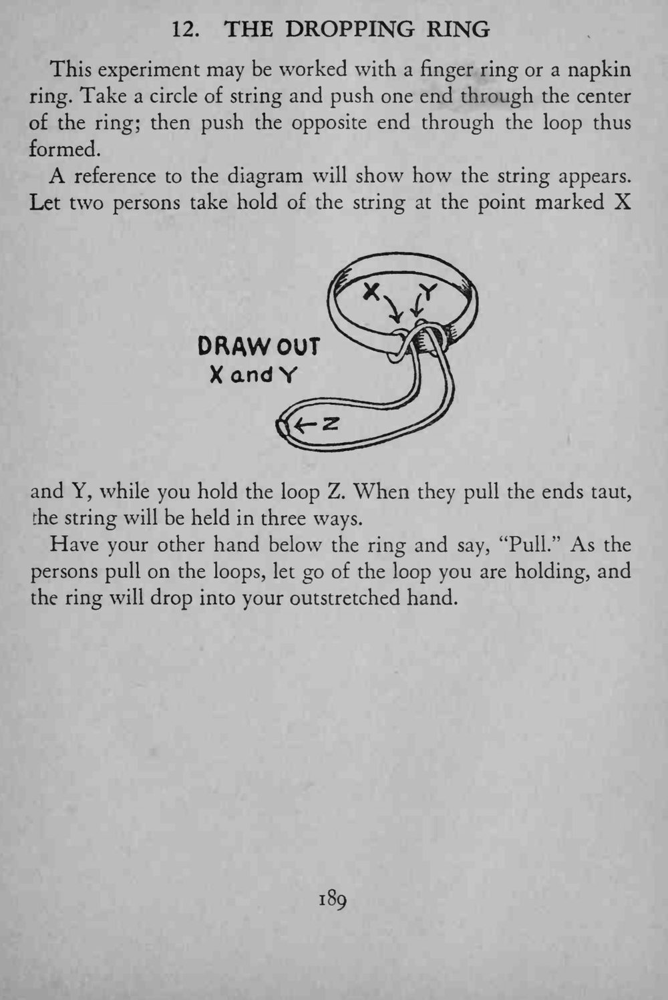
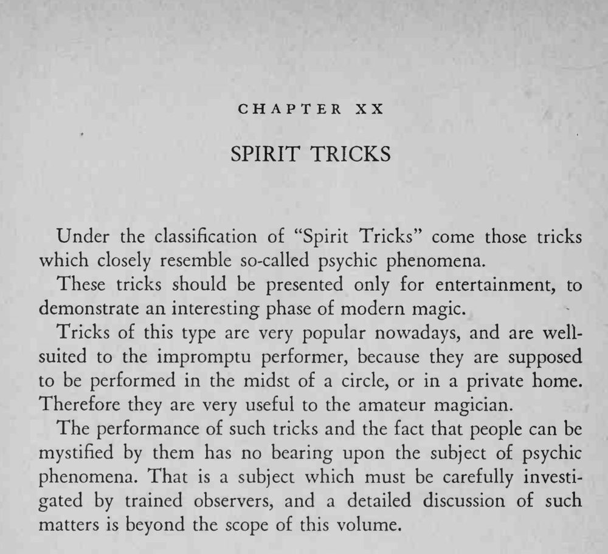

戒指被绳子以古怪的方式穿住，两位观众同时一拉，魔术师松开手中的绳圈，戒指便落进他摊开的手掌。
松绳圈的时机要跟观众拉绳同时，早或晚都会让戒指卡住。


This experiment may be worked with a finger ring or a napkin ring. Take a circle of string and push one end through the center of the ring; then push the opposite end through the loop thus formed. A reference to the diagram will show how the string appears. Let two persons take hold of the string at the point marked X XandY and Y, while you hold the loop Z. When they pull the ends taut, the string will be held in three ways. Have your other hand below the ring and say, "Pull." As the persons pull on the loops, let go of the loop you are holding, and the ring will drop into your outstretched hand. Under the classification of "Spirit Tricks" come those tricks which closely resemble so-called psychic phenomena. These tricks should be presented only for entertainment, to demonstrate an interesting phase of modern magic. Tricks of this type are very popular nowadays, and are wellsuited to the impromptu performer, because they are supposed to be performed in the midst of a circle, or in a private home. Therefore they are very useful to the amateur magician. The performance of such tricks and the fact that people can be mystified by them has no bearing upon the subject of psychic phenomena. That is a subject which must be carefully investigated by trained observers, and a detailed discussion of such matters is beyond the scope of this volume.